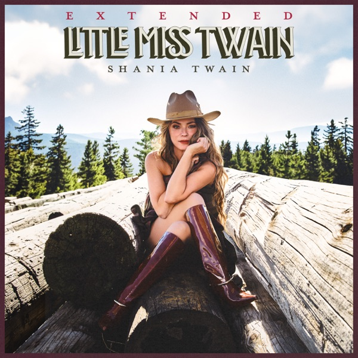
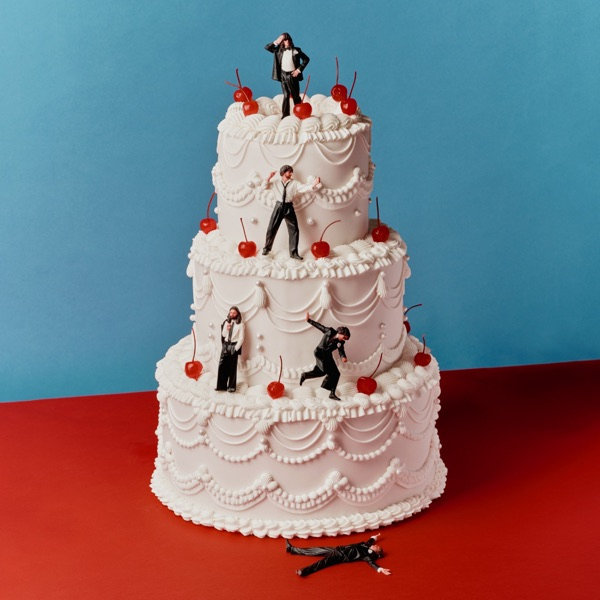

01
Drop alerts
Drop-Benachrichtigungen
The moment music drops, you know.
Wenn Musik erscheint, weißt du es.
MusicDrops watches the catalogue around the clock. A midnight album, an advance single, a day-before heads-up: you hear it the moment it matters.
MusicDrops beobachtet den Katalog rund um die Uhr. Ob Mitternachts-Album, Vorab-Single oder Vortags-Erinnerung: du hörst es genau dann, wenn es wichtig ist.
- Midnight alert the instant an album goes live
- Sofortige Benachrichtigung, wenn ein Album um Mitternacht erscheint
- Early-track ping when advance singles drop
- Frühwarnung, sobald eine Vorab-Single erscheint
- Day-before and countdown reminders too
- Auch Erinnerungen am Vortag und per Countdown
- Checks several times a day, faster and more reliable
- Mehrmals täglich geprüft, schneller und zuverlässiger
MusicDrops
nowjetzt
Just droppedGerade erschienen
Beyoncé · MORNING DEW (DONK)
MusicDrops
2m agovor 2 Min.
Coming tomorrowErscheint morgen
Shania Twain · Little Miss Twain

MusicDrops
1h agovor 1 Std.
Coming this weekErscheint diese Woche
Ariana Grande · petal
MusicDrops
yesterdaygestern
Coming in 2 weeksErscheint in 2 Wochen
Blossoms · Songs From The Wedding Cake
